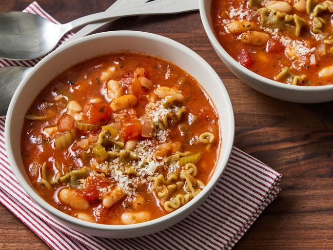

Pasta e fagioli

This is a famous recipe originally from Italy and now can be found in many cuisines across Asia, Europe and even Africa and the rest of the world! Today ,I bring this recipe to you!
Ingredients
These are the required ingredients for making pasta meal
- 1 tablespoon olive oil
- 1 medium onion, chopped
- 2 stalks celery, chopped
- 3 cloves garlic minced
- 2 teaspoons Italian seasoning
- 1/4 teaspoon Italian seasoning
- salt to taste
- 1(14.5 ounce) can chicken broth
- 2 medium tomatoes, peeled and chopped
- 1 (8 ounce) can tomato sauce
- 1/2cup ditalini and other small pasta
- 1(15 ounce) can cannellini beans, with liquid
Steps
- Make the dough
- knead the dough
- Roll out the dough
- Cut the pasta
- Cook the pasta
This is not a very reliable recipe check out here for a better one.
here are other odin recipes
click here to go back to the home page.